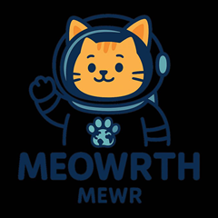

Meowrth [MEWR] is a fun, community-based meme coin based on the Solana blockchain.
Of all the planets in the solar system,
Mars was too cold and too quiet for the cat.
And as we all know memes need a vibrant crowd,
But Mars? I don't see any memes!
So the cats made a bold decision:
"Let's pack up! Let's go to Earth — Meow is calling us!"
Inspired by the journey of the curious Mars cat
Looking for a new home,
Meowrth focuses on creating creator-friendly meme playgrounds,
Community-driven token economy,
And a vibrant world full of fun and culture.
